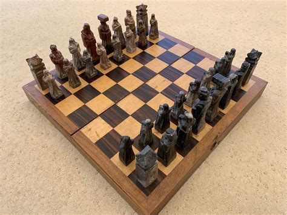

Chess is a game you can play either on boards or either websites.

In chess to become good, you have to look a couple of moves forward, like for yourself and for the opponnent.
It is usually a very good idea to prepare strathegies where you target either defenceless towers or even the king or queen.
it hurts everyone to see how thier queen just gets taken from them in the early game
The best 1. move is usually moving the pawn in front of the king by 2, enabling the queen and the side tower to make a move forward, if the ennemie doesn't see this, he be overwelmed by using the bishof and the queen to put him directly into a check then checkmate.
Another good move is only moving both horses to right positions to eat key pieces of the opponnent and distract him creating some really good opennings for you while staying safe
Note: the standart formation whitout the horse kind of self sustains, it holds every piece safe and even protects all key piecesanother good move which you can easely use on a less experienced player is using the bishofs to go directly for queen and king, if the opponnent isn't paying enought attention, he might as well just shoot himself into his own leg.
Note: a simple pawn move can destroy easely this strathegyanother move i like to do is moving the one directly in front of the queen "probably only works if you have the black color", and let him be eaten by the other pawn to move the queen out early and check the king very quickly, forcing either his queen out or his bishof in a desperate move.